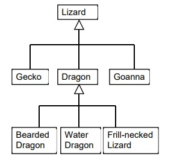

CSE1OOF
Workshop 11
Press SHIFT ? for help
Press f for fullscreen
Press CAPS for pointer
Inheritance
Inheritance is when classes may be children of other classses, with the methods and variables of the parent classInheritance was covered in the first lecture this week, so we'll just go over it briefly here. The below diagram is an example of inheritance in a family tree of animal species.

class Vehicle {
protected String brand;
public void start() {
// Start the vehicle
{
}
class Car extends Vehicle {
// This class will contain the attribute brand and the method start()
}
Task 1
To put inheritance into play, we need to first create a parent class. Please write a class named Animal. The Animal class has the following attributes:food this is a String and may be more than one word.
The Animal class has the following methods:
a default constructor (the default food is grass)
a constructor that takes one parameter, String food
a toString method that returns the name of the class and the food.
an accessor method getFood, that returns the food of the Animal
class Animal {
{ protected String food;
public Animal () {
food = "grass";
}
public Animal (String f) {
food = f;
... continued on next slide
Task 1, continued
The Animal class has the following methods:a default constructor (the default food is grass)
a constructor that takes one parameter, String food
a toString method that returns the name of the class and the food.
an accessor method getFood, that returns the food of the Animal
class Animal
{
protected String food;
public Animal () {
food = "grass";
}
public Animal (String f) {
food = f;
}
public String toString() {
return (this.getClass().getName() + "\n" + food);
}
public String getFood() {
return food;
}
}
Task 2
Write a class Emu which is a sub-class of Animal The Emu class has the following attribute:speed (this is a double) The Emu class has the following methods:
a constructor that takes one parameter, double speed (the food for an Emu is insects)
a toString method that returns the details of the Emu class, including the nformation in the base class
an accessor method that returns the speed of the Emu
class Emu extends Animal
{ protected double speed; public Emu (double s) {
food = "insects";
speed = s
} public String toString() {
return (this.getClass().getName() + "\n" + food + "\n" + speed);
}
public String getSpeed() {
return speed;
}
}
Task 3
Write a class Koala which is a sub-class of Animal. The Koala class has the following attribute:sleep this is an integer and is the number of hours that the Koala sleeps
The Koala class has the following methods:
a constructor that takes two parameters, String food and int sleep (the food for a Koala is gum leaves)
a toString method that returns the details of the Koala class, including the information in the base class
an accessor method that returns the number of hours that the Koala sleeps
class Koala extends Animal
{ protected int sleep; public Koala (food f, int s) {
food = f;
sleep = s
} public String toString() {
return (this.getClass().getName() + "\n" + food + "\n" + sleep);
}
public String getSleep() {
return sleep;
}
}
Task 4
Write a code fragment (assume it is in a driver program), that declares an array, of size 10 that can hold Animal, Emu and Koala objectsAnimal[] zoo = new Animal[10];
Task 5
Write a code fragment that instantiates one Emu object, one Koala object and one Animal objectzoo[0] = new Emu(25);zoo[1] = new Koala("Gum Leaves", 20);zoo[2] = new Animal ("Nuts");
Task 6
Write a code fragment that would display the contents of the arrayfor (int i=0; i< zoo.length; i++ {if (zoo[i] != null) {System.out.println(zoo[i].toString()); } }
Task 7
Write a code fragment that would display the speed of the Emu Again, assume that you are in a driver program and using the array that you Instantiated in Tasks 4 and 5System.out.println (zoo[0].getSpeed());